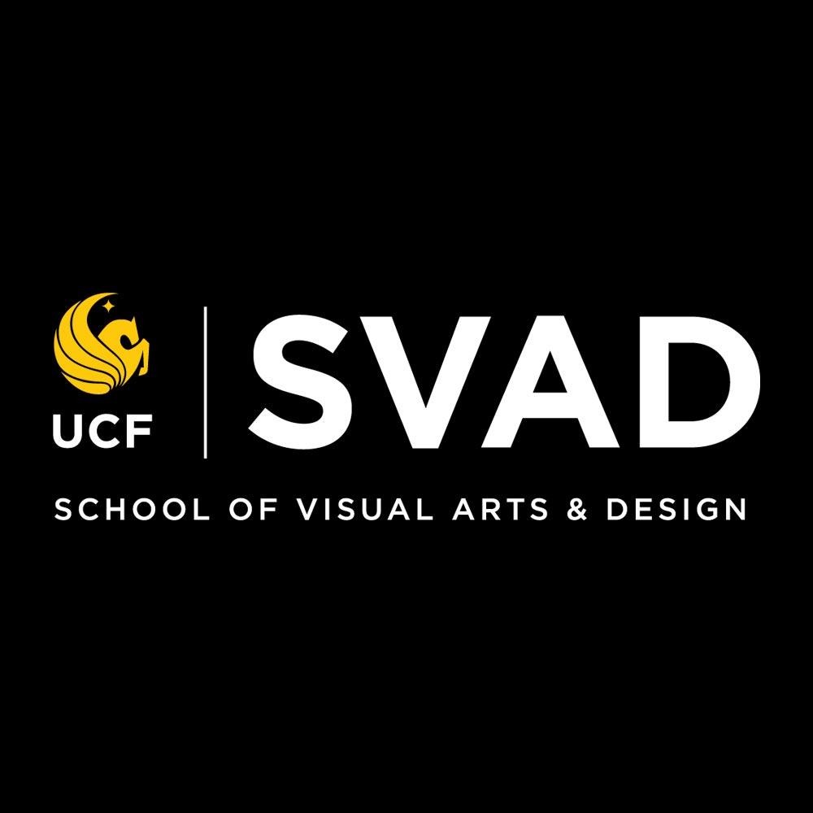

<!DOCTYPE html>
<html lang="en"></html>

<!-- Head Section of document not seen -->
<head>
    <link rel="stylesheet" href="styles/main.css">
    <title>Major Assignment 3</title>
</head>

<!-- body of document -->
<body>
    <!-- logo -->
    <div class="logo">
        
    </div>
    <!-- titles -->
   <h1>All About My UCF Experience!</h1>
   <br>
   <h2>A Timeline Dedicated to How I Got Here</h2>
    <!-- the grid -->
    <div class="grid">
        <div class="grid-item one"><strong>1. The Uh-OH</strong><br><em>Prior-July 2020</em>
            <div> 
            
            </div>
        </div>
        <div class="grid-item two">
            <ul>
                <li>I’m a Direct Connect graduate from Valencia college where I got my associate in art’s degree there in July of 2020.</li>
                <li>My accomplishment was short lived because the following semester I started UCF online classes for my bachelor’s immediately after.</li>
                <li>I took electives at Valencia that were gearing me towards a graphic design BA because that was my career goal at the time.</li>
            </ul>
        </div>
        <div class="grid-item three"><strong>2. The Dive</strong><br><em>August 2020-December 2020</em></div>
        <div class="grid-item four">
            <ul>
                <li>I took Into to Computer Art which was a very fun and challenging class.</li>
                <li>I was also preparing to turn in my online portfolio the following Spring semester in order to get into the program.</li>
            </ul>
        </div>
        <div class="grid-item five"><strong>3. How The Tables</strong><br><em>January 2021-April 2021</em>
            <div>
                
            </div>
        </div>
        <div class="grid-item six">
            <ul>
                <li>Additionally, portfolio review is mandatory and is only offered once a year for the graphic design track <em>(unlike studio art *eyeroll*)</em>.</li>
                <li>I didn’t pass my portfolio and I had to make a decision. Do I wait another year to make better artwork and try again or declare a different major to try and graduate sooner?</li>
                <li>Answer: The answer is the latter.</li>
            </ul>
        </div>
        <div class="grid-item seven"><strong>4. The Break</strong><br><em>May 2021-July 2021</em></div>
        <div class="grid-item eight">
            <ul>
                <li>My first summer break since I started going to college!</li>
                <li>Trying to get my life together!</li>
            </ul>
        </div>
        <div class="grid-item nine"><strong>5. Realignment</strong><br><em>August 2021-December 2021</em></div>
        <div class="grid-item ten">
            <ul>
                <li>I ended up choosing Visual Arts Management as my new major and Digital Media as my minor.</li>
                <li>I chose that major and minor because I didn't hate the idea of it and my credits transfered over from Valencia.</li>
                <li><em>But not my foreign language credits, I'm still mad about that.</em></li>
            </ul>
        </div>
        <div class="grid-item eleven"><strong>6. Repurpose</strong><br><em>January 2022-Present</em>
            <div>
                
            </div>
        </div>
        <div class="grid-item twelve">
            <ul>
                <li>I fell in love with the idea of being a Museum Director after taking 2 courses that changed my perspective on history and drew me in.
                </li>
                <li>This class is the last I need to complete my minor but I will be taking one more digital class to fulfill the college credit requirement.</li>
            </ul>
        </div>
    </div>
    <br>
    <!-- future section -->
    <h2>My Forseeable Future</h2>
    <p>I have an internship at the <em>Albin Polasek Museum & Sculpture Gardens</em> coming this summer. Last summer I interned at the Orlando Museum of Art and both internships are not for college credit. I believe in just getting as much experience as possible until I graduate next year.
    </p>
    <br>
    <!-- image -->
    <div class="grad">
        
    </div>
    <br>
    <!-- decision section -->
    <h2>Decisions Along The Way</h2>
    <div class="future">
        <ul>
            <li> I decided to change my major to graduate sooner because I felt like being a graphic designer wasn't meant to be. Not passing the portfolio review was meant to be because I feel like it steered me in the direction of a future I am happy and content with.</li>
            <li>Another decision I made was to work a job while in school. Initially I attended school part-time and worked part-time, but due to the pandemic and my living situation changing I work full-time and attend school part-time. Working is a necessity for me and for my situation.</li>
            <li>Why part-time school if I'd prefer to graduate sooner? This is because 3 classes are difficult to balance already, I really couldn’t imagine taking 4 or more classes while working, I respect those who do. My mental health comes first in this situation.</li>
        </ul>
    </div>
    <br>
</body>